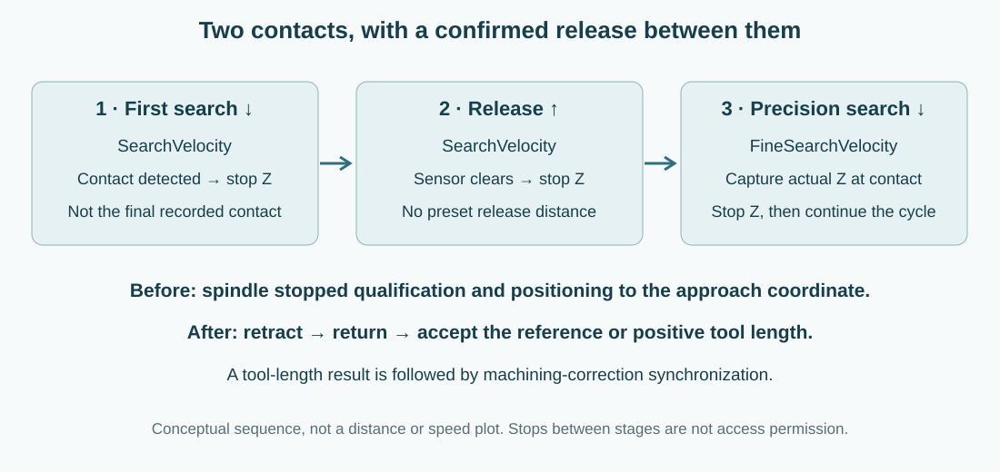

RADONIX · ROUTERXYZ+TC · CHAPTER 12
Operator Manual · English · 8 October 2026
Tool-length Measurement
Establish the empty-spindle reference, measure the fitted tool against it, and distinguish a probe contact from a completed and accepted measurement.
Expanded draft for review. This chapter describes the supplied measurement routine. The installed setter, approved contact arrangement, tooling and machine procedure determine whether a measurement is suitable.
12.1 Understand what tool-length measurement establishes
Different tools project different distances below the spindle. Even the same cutter can have a different projection after it is replaced or repositioned in its holder. The control system needs the correct length information so that the machining coordinates account for the tool actually fitted.
The tool setter is the installed device that signals contact during the approved measuring procedure. The supplied routine moves the spindle to the configured setter area, makes an initial contact search, releases the setter, makes a slower final contact search, and returns. Only a successfully completed routine supplies a contact position for acceptance.
Two measurements have different purposes
First, the machine measures its empty-spindle reference using the machine builder's approved contact arrangement. This records the machine Z position at reference contact. Later, with a numbered tool fitted, it measures that tool's contact position against the same setter arrangement.
The tool length is the second contact's machine Z coordinate minus the recorded empty-spindle reference Z. In the intended coordinate arrangement, a tool projecting below the spindle contacts the setter while the spindle is higher, so the resulting length is positive.
| Value | What it describes | What it does not do |
|---|---|---|
| Empty-spindle reference | The measured machine Z contact for the approved empty-spindle arrangement. | Set the workpiece origin. |
| Tool contact Z | The machine Z coordinate captured at the tool's final precision contact. | By itself establish a completed, accepted measurement. |
| Tool Length | The accepted difference between tool contact Z and reference Z. | Change the magazine station or identify the cutter. |
| Tool Offset.Z | An independent configured correction added to the measured length for machining. | Replace the need for a valid measurement and setup. |
This is not workpiece zero setting
Setting a work origin tells the program where the job is located. Measuring tool length tells it about the tool fitted to the spindle. These tasks can both affect the relationship between machine and work coordinates, but they answer different questions.
Do not set the workpiece Z origin to hide a wrong tool length. That may make one displayed location appear correct while leaving other tools or later operations wrong. Resolve the tool data and the work origin through their separate approved procedures.
Measurement does not assess cutter diameter, wear, cutting-edge damage, holder quality or whether the tool is appropriate for the material. It also does not establish that every return path is clear. Those remain part of the physical setup and job checks.
The empty-spindle contact arrangement is installation-specific. Do not improvise a contact surface, fit a temporary object or probe with an unapproved spindle component. This chapter explains the application's behaviour; the machine documentation must identify exactly which physical arrangement may contact the setter.
12.2 Find the measurement command and identify which mode it will use
The English main-window command is Measure Tool, next to the Tool selector in the spindle area. Some design views use the caption Measure Tool. It is a measurement command, not an Apply button for a tool choice and not a way to enter a length manually.
The same command serves two purposes. It chooses its mode from the recorded current tool at the time of the request. It does not ask you to choose between reference and tool measurement from a separate mode list.
| Recorded current tool | Requested operation | Additional requirement |
|---|---|---|
| Blank / zero | Measure the empty-spindle reference. | The spindle must actually be empty and the operator must approve the confirmation. |
| A valid numbered tool | Measure the fitted tool's length. | A previously accepted empty-spindle reference is required. |
| Invalid or uncertain tool record | No reliable measurement mode can be inferred from the physical setup. | Reconcile the actual tool and record before requesting measurement. |
The current tool must describe reality
If the Tool field is blank while a tool is physically installed, pressing the measurement command can request reference measurement for the wrong physical condition. If the field contains a number but the spindle is empty, the application can associate a contact with a tool that is not there. Applicable sensor checks help, but they do not replace the operator's verification of the actual assembly.
Use the tool-exchange procedure to establish the correct recorded and physical state. Do not edit CurrentTool simply to select a preferred measurement mode. The number also affects tool correction and later exchange routes.
Read the empty-spindle confirmation
For a reference request that passes the initial checks, the application asks: “Continue with reference measurement while the spindle is empty?” The accompanying description explains that measurement will continue without a tool recorded in the spindle.
Choose Yes only when the physical spindle is empty and the approved reference-contact arrangement is ready. Choose No if those facts are uncertain. Cancelling at this dialog prevents the measurement from being started. After confirmation, the application checks admission again before starting the routine.
For a numbered tool, there is no equivalent empty-spindle Yes/No prompt. Prepare the complete operation before pressing the command; an accepted request can begin the spindle-stop and measuring sequence.
FIGURE 12-1 · CONTROL AND CONFIRMATION SCREENSHOTS REQUIRED
One command, two modes
Insert an English main-window crop showing Tool and Measure Tool, followed by the empty-spindle confirmation dialog. Label the recorded tool that determines the mode. Show the Yes and No choices without accepting a live request merely to obtain the picture.
Suggested image: assets/images/12-measurement-control.png. Use an approved demonstration or recorded view; identify Simulation if that is the environment shown.
Watch both the status message and the report
The main progress area presents measurement status, including measuring, cancelled, rejected and accepted-result messages. It is a shared status area, so a message is not guaranteed to remain there indefinitely. The operation report also records accepted reference and length results and rejection reasons.
A button that is available is not proof that the probe settings and reference are valid. Some detailed conditions are checked when the action is requested so that the application can explain the rejection. Read that response before repeating the request.
12.3 Prepare the setter, tool and entire movement area
Measurement is an automatic motion operation. Prepare the setter, the full approach and return route, and the actual contact arrangement before pressing the command. A clear setter top is not enough if the head must pass an obstruction on its way there or return into an unsuitable space afterward.
Use the approved machine procedure to inspect and prepare the setter contact surface. Material, contamination, an incorrectly positioned setter or unsuitable tooling can change the contact or make probing unsafe. The application cannot determine that the surface being contacted is the correct one.
| Check | What to establish |
|---|---|
| Measurement purpose | You intend either an empty-spindle reference or the fitted tool's length, and the recorded tool selects that mode. |
| Physical assembly | The actual tool or approved empty-spindle contact arrangement is correctly prepared. |
| Setter | The installed device, surface condition and location agree with the commissioned setup. |
| Probe input | ToolHeightSensor is correctly assigned to the required physical digital input and operates through the approved check. |
| Reference | For a numbered tool, an accepted reference exists and still belongs to the current physical setup. |
| Machine readiness | Connection, complete homing, stopped axes and required spindle conditions are valid. |
| Approach and return | Every segment is clear for the actual tool, holder and head, including the final return height. |
| Other activity | No machining program, tool operation, homing, positioning or competing path is active. |
| People and stop response | The area is prepared, and the operator can observe and use the prescribed stopping response. |
The tool-setter input is required
The measurement requires ToolHeightSensor to be assigned to a physical digital input. This is different from some optional spindle feedback signals. An installation without an optional grip or health input does not thereby gain permission to measure without the tool-setter input.
The routine depends on contact and release behaviour from that signal. A fixed value, a stuck sensor or an incorrectly configured signal is not a valid substitute. Do not force an input or change its mapping to make a measurement appear successful.
Readiness includes more than homing
All configured axes must have the required homing state, including the second gantry motor. The relevant axes must be ready and stopped, the machining path must be stopped, and all motion paths must be idle. A pending tool exchange, measurement or correction synchronization blocks a new measurement.
The supplied background interlocks and measurement routine must be running or available as required. The spindle run output must be configured. Assigned pressure, thermal and drive-ready inputs must satisfy their required states. The grip must not be commanded open; applicable released and piston indications must agree with the closed/retracted condition. A numbered tool also needs its applicable clamped indication.
Those checks do not identify the cutter, verify the setter surface or prove that an empty-spindle contact arrangement is mechanically permitted. Complete the physical checks even when the command is available.
During the supplied measurement, spindle run commands are held off, and the routine waits for its stopped qualification before measurement motion begins. Still follow Chapter 10 and the machine's access procedure; a software condition does not authorize reaching into the machine.
12.4 Understand the probe settings and the approach clearance
The measurement settings are under ToolChanger → ToolLengthMeasurment. The spelling shown here matches the current settings group. These are machine-setup values; ordinary measurement should use the approved commissioned values rather than trial-and-error edits.
| Setting | Meaning | Operator distinction |
|---|---|---|
| ProbePosition | The configured X/Y/Z probe location in machine coordinates. | Its X/Y locates the approach; its Z is used to calculate the approach height. It is not the newly measured reference. |
| ApproachClearance | A positive Z amount added to ProbePosition.Z to obtain the approach/retract coordinate. | Not an automatically measured gap below the current cutter. |
| SearchVelocity | The first downward search speed and upward probe-release speed. | Not the speed used for every movement in the cycle. |
| FineSearchVelocity | The final precision-contact search speed. | A separate setting from the first search. |
| ReferenceOffsetZ | The accepted empty-spindle machine Z contact. | A measured reference, presented read-only. |
| ReferenceValid | Whether an empty-spindle reference has been accepted; shown as Not measured or Measured. | Not a live inspection of whether the physical setup has remained unchanged. |
Calculate the approach height before relying on it
The supplied routine uses the configured ProbePosition.Z plus ApproachClearance. It does not add the fitted tool's measured length to that approach coordinate. The actual tool must therefore clear the setter and surrounding equipment at that machine position.
For example, a configured probe Z of 20 mm and an approach clearance of 100 mm produce an approach coordinate of 120 mm. This arithmetic does not prove a 100 mm gap between the cutter tip and the setter. A long tool can project into that space. The numbers are illustrative and must not be copied into a machine configuration.
It is especially important to understand this when measuring a newly fitted tool whose length is not yet known. The approved setup must provide adequate approach clearance for the range of assemblies that will be measured. Successful numerical validation only establishes that the configured coordinate fits the permitted travel.
Traverse and search speeds have different jobs
Travel to the setter and the return use the configured TraverseVelocity. SearchVelocity is used to find the first contact and to move upward until the setter releases. FineSearchVelocity is used for the second, precision contact. Changing a jog slider does not establish these measurement speeds.
All relevant speed and clearance values must be positive and suitable for the physical setter. Do not increase a search speed to shorten a slow-looking cycle. The initial approach is a positioning movement, not a contact search, and the setter input does not serve as a general collision detector along that route.
The horizontal approach has a fixed decision band
The supplied routine compares the starting X and Y with ProbePosition. If either differs by more than 0.5 mm, it performs a Z-first transfer using Z MaxCourse before moving to the probe X/Y and then the approach Z. If both are within that band, it keeps the current X/Y and goes directly to the approach Z.
This is a route decision, not a guarantee that any point within 0.5 mm is physically suitable for the cutter and setter. Use the approved alignment and contact-area requirements of the installation. Do not borrow the different positioning tolerances described for other commands.
FIGURE 12-2 · SETTER AND SETTINGS IMAGES REQUIRED
The actual setter and its commissioned approach
Supply a photograph identifying the approved contact surface and the permitted empty-spindle arrangement, plus an English settings crop showing ProbePosition, ApproachClearance, SearchVelocity, FineSearchVelocity and the reference fields. Label the approach coordinate separately from actual cutter clearance.
Suggested image: assets/images/12-setter-settings.png. Photograph under the machine's access/isolation procedure; mark all shown values as installation-specific.
Search and return timeouts in the supplied routine use the configured HomeTimeout duration. This does not turn measurement into homing or give permission to alter that machine-wide setting to hide a missed contact. An unexpected timeout requires assessment of the relevant stage.
12.5 Measure and verify the empty-spindle reference
The empty-spindle reference gives later tool measurements a common baseline. Perform this procedure only with the machine builder's approved empty-spindle contact arrangement. A blank Tool display is a prerequisite for choosing the mode, but the operator must also establish that the spindle is physically empty.
If a tool is fitted, first use the approved unloading procedure and wait for the complete exchange to finish. Do not remove a tool informally and leave its number recorded, or change the number to zero while the assembly remains fitted.
- Establish the correct physical and recorded empty state.
Complete the unloading, closing and verification procedure. Confirm that Tool normally shows blank/zero.
- Prepare the setter and approved reference-contact surface.
Check the physical arrangement, commissioned probe settings, full approach and final return.
- Confirm machine readiness.
Complete required homing, stop other operations, and wait for tool correction synchronization to finish.
- Press Measure Tool once.
Read any rejection. If the request is admissible, read the empty-spindle confirmation.
- Confirm only the prepared empty-spindle operation.
Choose Yes to permit the automatic routine; choose No if the physical condition or purpose is uncertain.
- Observe the whole measuring cycle.
Expect spindle-stop qualification, positioning, first contact, release, precision contact, retract and return.
- Check the accepted reference result.
Look for the empty-spindle reference success message and the updated ReferenceOffsetZ and ReferenceValid values.
| Observation | Meaning | Next action |
|---|---|---|
| Confirmation cancelled before the routine starts | No new measurement was started by that request. | Resolve the preparation or leave the previous reference unchanged. |
| A contact is observed during the cycle | The sensor has responded at that stage. | Continue observing; contact alone is not an accepted reference. |
| Successful routine and accepted empty-spindle result | The final contact Z is saved as ReferenceOffsetZ and ReferenceValid becomes Measured. | Verify that the value is plausible for the approved setup. |
| Interrupted or unsuccessful cycle | No new contact from that unsuccessful attempt is accepted as the reference. | Assess the actual machine state and the reason before retrying. |
ReferenceValid records acceptance, not ongoing physical validity
The read-only reference status tells you that a reference measurement was accepted. It does not sense whether the setter was moved, the contact arrangement changed or the relevant machine geometry was disturbed afterward. A reference from an earlier setup may remain displayed as Measured even though it must no longer be trusted for the changed installation.
If a new attempt fails, an existing accepted reference can remain visible. Do not mistake that old status for success of the latest attempt. Read the time and content of the new result message and report.
Re-measuring the reference does not re-measure all tools
Accepting a new empty-spindle reference updates the reference fields. It does not automatically revisit every stored tool length or physically remeasure the magazine. Any change that makes the old baseline unsuitable requires an approved plan for the affected tool data as well.
A reference value can be zero or negative in a valid machine-coordinate arrangement; it is the actual accepted contact coordinate, not a positive tool length. Do not judge it solely by its sign. Compare it with the commissioned expectation and resolve a surprising result before measuring production tools.
12.6 Measure the installed numbered tool
Measure a numbered tool after its physical installation and recorded identity have been established through the approved exchange procedure. The result is stored for that current tool number. The measurement does not identify the cutter automatically or ask which tool record should receive the result.
A valid accepted empty-spindle reference is required. If it has not been established, the application refuses the numbered-tool measurement. If the reference exists but no longer matches the approved physical setup, resolve that before relying on a new length.
- Complete the tool exchange and verify identity.
Confirm the actual assembly and the normal current-tool display. Wait for all exchange and correction stages to finish.
- Check the tool's suitability for the setter.
Use the approved contact point and arrangement for this cutter. Confirm that the approach clears the actual projection and that the tool can be measured without damage.
- Verify the reference and prepared route.
Check the applicable reference status, setter condition, return location and machine readiness.
- Press Measure Tool once.
For a numbered tool, an accepted request starts without the empty-spindle confirmation dialog. Read any refusal before another attempt.
- Observe both contacts and the complete return.
Do not treat the initial touch, second touch or first upward movement as completion.
- Read the accepted tool-length result.
Confirm that it names the intended tool and that the value is plausible for the actual assembly.
- Wait for correction synchronization.
The new length is followed by applying the corresponding machining correction. Resolve any synchronization rejection before further tool operations or machining preparation.
| Item | Effect of an accepted result |
|---|---|
| Current tool's Length | Replaced by the accepted positive contact-minus-reference value and saved. |
| Current machining tool correction | Synchronization is requested using that length plus the configured correction. |
| Recorded current tool number | Measurement does not perform a tool exchange or choose a different tool number. |
| Empty-spindle reference | Not replaced by a numbered-tool measurement. |
| Other tools' stored lengths | Not remeasured by this operation. |
| Work origins and magazine positions | Not redefined by the length-measurement result. |
The tool must stay the same throughout
The application captures the current tool number for the request. If that recorded number changes before the measurement is accepted, the operation is rejected rather than storing the contact under a different tool. Do not edit tool identity or configuration during measurement.
A failure or interruption before acceptance leaves the previous confirmed length in place. That retained number may still be unsuitable for a newly replaced or repositioned cutter. Retaining data is not the same as validating the current physical assembly.
Measurement success and correction acceptance are separate checks
The tool-length success message is issued when the new length has been accepted and saved. The application then synchronizes the machining correction. If the controller refuses that correction, the measured length can already be stored while the applied correction still needs attention.
Do not keep measuring in an attempt to clear a correction error. Record the measured value and the exact synchronization message. The cause may be the allowed travel, coordinate state or configuration rather than an unsuccessful probe contact.
The supplied measurement command does not resume the machining program or issue a spindle-start command at completion. After verification, prepare the next activity deliberately. If measurement changed the active tool length, recheck the job's approach and clearance assumptions before a new Run request.
12.7 Recognize the first search, release and precision contact
The supplied cycle deliberately contacts the setter twice. The first contact locates it; the upward release separates the contact surfaces; the second search captures the precision contact used for the result. Knowing this sequence helps you distinguish expected movement from an interruption or an incomplete measurement.

Spindle stop and approach happen first
The routine removes forward, reverse and speed requests and waits for the supplied spindle-stopped qualification. It then positions to the approach coordinate using the route decision described earlier. The spindle commands remain off throughout measurement.
The approach move is not the precision search. It must arrive with the required physical clearance for the actual tool. Do not rely on the measuring sensor to protect a tool whose projection makes the configured approach too low.
| Stage | Movement and observation | When the stage advances |
|---|---|---|
| First search | Z searches downward toward its configured lower travel coordinate at SearchVelocity while the setter is not active. | The setter becomes active, a Z stop is requested, and stopped status is reached. |
| Release | Z moves upward toward its upper travel coordinate at SearchVelocity while the setter remains active. | The setter clears, a Z stop is requested, and stopped status is reached. |
| Precision search | Z searches downward at FineSearchVelocity. | The setter becomes active; the current actual machine Z is captured and Z is stopped. |
| After final stop | The cycle proceeds to retract and return. | Successful return is required before the result is published for acceptance. |
The release is controlled by the sensor, not a fixed lift distance
The upward release stage ends according to the setter signal and the axis stopping response. It is not a promise to lift a particular number of millimetres. A short upward movement followed by another downward search can therefore be the expected sequence.
Likewise, if the setter is already active when the first-search stage is entered, the supplied routine proceeds through stopping and release rather than demanding another first downward contact. This does not make an unexpectedly active sensor acceptable during preparation. Investigate an unexplained active signal before starting.
Which position is captured?
The precision stage captures the actual machine Z when the active contact is observed. The axis then stops. The settled position after stopping can differ slightly from the captured contact because the stopping response follows detection. Do not copy the later stationary Z display and call it the measured contact value.
The operation is not accepted merely because that contact coordinate was captured internally. The routine still needs to finish the retract and return successfully, and the application must validate and store the result.
If contact never appears, never releases or cannot be confirmed through the required sequence, the relevant stage times out. Travel limits are not the intended contact surface. Do not wait for a visibly unsuitable approach to reach a limit; use the prescribed stopping response if the movement is inconsistent with the approved setup.
12.8 Wait for retract, return and final acceptance
The final precision touch is followed by more movement. The routine retracts toward the configured approach Z and returns toward the machine position captured when measurement started. Do not approach the setter or treat the operation as finished when the tool first lifts off the contact surface.
The captured starting position uses the actual X, Y and Z coordinates at routine activation. The return belongs to that measurement attempt. If an operation is interrupted and a new request is later started from somewhere else, that new attempt has a different starting and return position.
| Stage | Expected behaviour | Operator check |
|---|---|---|
| Initial retract | Z moves upward toward the approach coordinate if below it, then stops. | The tool and holder can leave the setter along that route. |
| Horizontal return was required by the starting route decision | Z moves to the configured upper traverse coordinate before returning X/Y. | The whole raised return envelope remains clear. |
| X/Y return | X and Y return toward their captured starting coordinates. | Do not assume the exact reverse of the outbound geometric path. |
| Final Z return | Z returns toward the captured starting Z and stops. | The final height is suitable for the actual fitted assembly. |
| Routine succeeds | The final contact coordinate is published with successful completion. | Read the application's accepted reference or tool-length result. |
The route depends on the starting X/Y relationship
If the starting X/Y was outside the routine's 0.5 mm decision band around the probe, the supplied sequence makes the raised horizontal transfer and corresponding horizontal return. On return it commands X and Y toward their starting coordinates individually. Do not assume a particular straight-line diagonal or an exact retracing of the outward path when checking obstructions.
If both starting coordinates were within the band, no X/Y repositioning was requested. After retracting, the routine returns Z without a horizontal return stage. The tool still needs a physically suitable contact location and vertical clearance in that case.
The return uses the beginning-of-cycle decision; it is not an invitation for the operator to jog or reposition the machine between stages. Let the operation finish or stop it through the appropriate controls.
A retract is not always a trip to the upper limit
The first retract after contact uses the calculated approach coordinate. It is followed by the upper traverse stage only when the horizontal return is needed. A vertical-only cycle can therefore look much shorter than one that started across the table.
If the actual Z is already at or above the approach coordinate at the retract stage, the supplied routine does not first move downward to it just to reproduce a fixed travel distance. This describes the control behaviour; it does not establish that an unsuitable approach setting is acceptable.
Completion is required before the contact becomes a result
The supplied routine publishes its successful contact result after the return and final stopped condition. A return timeout therefore prevents that attempt from being accepted even if both touches appeared correct.
For the reference, acceptance updates the reference fields. For a numbered tool, acceptance also checks that the calculated length is positive before storing it, and then starts machining-correction synchronization. These later checks are why “the tool touched” is an incomplete description of measurement success.
A failed or cancelled cycle must not be expected to perform the normal retract and return. Establish the actual position and use the recovery procedure described later. Neither the success route nor the starting position is a guaranteed destination after interruption.
12.9 Read the measured length and verify the machining correction
An accepted reference result and an accepted tool-length result name different values. The reference is a machine Z contact coordinate. A numbered tool's Length is a difference between two contact coordinates. Neither should be confused with the current Z display after the machine has returned.
For a numbered tool, the supplied calculation is Tool Length = tool contact Z − ReferenceOffsetZ. The calculated length must be finite and greater than zero. A zero or negative result is rejected rather than saved as a normal tool length.
| Quantity | Example value | Meaning |
|---|---|---|
| Accepted empty-spindle reference Z | 20.000 mm | The common reference contact. |
| Current tool's precision contact Z | 80.250 mm | The tool contacts while the spindle is higher. |
| Calculated Tool Length | 60.250 mm | 80.250 − 20.000. |
| Configured Tool Offset.Z | +0.500 mm | An independent correction; measurement does not erase it. |
| Resulting Z machining tool correction | 60.750 mm | 60.250 + 0.500. |
The numbers illustrate the relationship only. They are not recommended lengths, corrections or setter coordinates. A positive result is necessary for acceptance but is not a complete physical plausibility check. Wrong tool identity or an unsuitable contact arrangement can still produce a positive number.
Check identity, magnitude and context
Read which tool the success message names. Compare the accepted Length with the expected range for that actual assembly under the approved setup procedure. Consider whether the cutter or projection changed, whether the reference belongs to the current setup and whether the setter was contacted at the approved surface.
A displayed result with several decimal places describes the stored numerical value. It is not a claim that the complete mechanical measurement is accurate to every displayed digit. Do not infer repeatability or machining accuracy from formatting alone.
The configured correction remains separate
Length measurement updates the current tool's Length. The tool's configured X/Y/Z Offset remains independent. When the machining correction is synchronized, X and Y use their configured correction values and Z uses Length plus Offset.Z.
That means a successful new measurement can coexist with a previously configured additional correction. Do not assume the success message reset all tool-related adjustments. Review an unexpected machining coordinate with both measured Length and configured Offset in view.
FIGURE 12-4 · ACCEPTED-RESULT SCREENSHOT REQUIRED
Reference, measured tool length and separate correction
Insert an English report/settings view, or a clearly labelled set of crops, showing a genuine accepted reference, a numbered-tool length result and that tool's separate Length and Offset values. Include enough context to identify the tool and the current attempt.
Suggested image: assets/images/12-measured-result.png. Label the returned current Z display separately from contact Z. If correction synchronization later fails, show it as a separate outcome rather than labelling the entire setup ready.
A new reference is not a batch recalculation
The application does not automatically remeasure every tool when the reference is accepted. Likewise, measuring one tool does not update the remaining magazine tools. Keep the job's verification records consistent with the actual work performed.
If a successful tool result is followed by a correction error, preserve both messages. The new Length may already be stored. Do not describe that situation as “the measurement never changed anything,” and do not immediately undo the length or alter work zero to make the error disappear.
Before machining, verify that the correct tool is fitted, its accepted data are plausible and its machining correction has been accepted. Then use the normal job-start checks for work origin, clearance and spindle operation. Measurement alone does not make the complete job ready.
12.10 Stop a measurement and recover without trusting an unaccepted contact
A measurement can be interrupted before approach, while contacting the setter, during retract or on the return. The appropriate recovery depends on where the machine actually stopped. Do not assume that cancelling causes it to lift away or return to the starting position automatically.
For an ordinary interruption, use the application's appropriate stopping control. Its Pause and Reset paths cancel the active tool operation and request stopping of all motion. For immediate danger or an unsuitable response, use the installed emergency procedure.
- Request the prescribed stop.
Do not rely on closing a window, releasing the measurement button or changing the feed control to cancel the cycle.
- Observe the actual stopping response.
Keep clear until the machine is in the state required by its operating procedure.
- Identify the interrupted stage.
Record whether the cycle was approaching, searching, releasing, retracting or returning.
- Check the tool's physical relationship to the setter.
It may still be touching or pressing on the device. Use the approved inspection and recovery method.
- Check whether a result was accepted before the interruption.
Read the report and stored values. Distinguish an unsuccessful probe cycle from a later correction-synchronization problem.
- Resolve the cause and prepare a new attempt deliberately.
Verify the tool record, reference, sensor, approach and return route again before starting.
| Situation | What can be relied on | What must not be assumed |
|---|---|---|
| Empty-spindle confirmation declined | That request did not start the routine. | That the preparation or physical reference has been verified. |
| Cycle cancelled before successful acceptance | The previous confirmed calibration remains the stored basis. | That it is valid for a newly changed physical setup. |
| Precision contact occurred but return failed | The attempt did not produce an accepted new result. | That the observed touch is sufficient to use a new length. |
| Length accepted, correction subsequently rejected | The new Length can already be saved. | That the new machining correction is active or that no data changed. |
| Connection lost | The pending measurement cannot be treated as completed. | That the tool retracted, that the old reference is newly verified or that reconnect completes the cycle. |
There is no automatic undo of the physical movement
The unsuccessful routine's recovery path is not the normal success return route. Treat the head's location as the location actually reached, not the intended starting point. An operator stop or emergency response also does not restore the initial physical position.
If the tool remains near or against the setter, do not issue Go Home, parking, homing or another automatic movement as a generic escape. First establish an appropriate departure route for the actual contact condition. A valid destination elsewhere does not make the first movement safe.
Retained calibration is not a new verification
The application deliberately avoids replacing confirmed data with an unaccepted contact. That protects the stored result from a failed cycle. It does not certify that the old value remains suitable after the tool has moved in its holder, the cutter has changed or the setter has been disturbed.
After recovery, use the normal readiness and measurement procedure again. If the actual tool, reference, sensor condition or accepted data cannot be established through the approved operator checks, leave the operation stopped and obtain assistance. Do not alter work zero or tool identity to conceal the uncertainty.
12.11 Interpret a rejection or measurement result code
First determine whether the request was refused before the routine began, the measuring cycle ended unsuccessfully, or a result was accepted but the machining correction could not be synchronized. These are different problems, even if the final visible symptom is an unavailable control.
The report uses MeasureToolLength for the measuring operation. A status message such as Tool Z measurement rejected is followed by a reason. Read the complete message, operation name and exit reason rather than relying on a number alone.
| Result | Stage or condition | Operator interpretation |
|---|---|---|
| 0 | The routine completed the contact, retract and return sequence successfully. | The application still validates and accepts the returned contact as a reference or positive tool length. |
| 1 | Machine or motion-path readiness was unsuitable. | Check stopped/homed state, competing activity and the preceding report. |
| 2 | Invalid settings or target. | Have probe coordinates, approach clearance, speeds and travel checked. |
| 3 | Spindle-stop wait timed out. | Assess spindle rundown and its required feedback; no measurement success is implied. |
| 4 | First search or its stopping stage timed out. | Check actual alignment and contact response through the approved procedure. |
| 5 | Probe release or its stopping stage timed out. | Check whether the setter cleared and whether the tool remains in contact. |
| 6 | Precision search or final search stop timed out. | The final measuring stage did not complete; do not use the attempt as a new calibration. |
| 7 | Required spindle configuration or applicable health condition was lost. | Check the relevant pressure, thermal, drive-ready and configuration information. |
| 8 | The retract/return phase timed out. | A contact may have occurred, but the attempt was not completed and accepted. |
Timeout identifies an unfinished stage, not its single cause
A first-search timeout could involve alignment, sensor response, motion readiness or the allowed duration. The number does not prove that the sensor alone is defective. Similarly, a release timeout needs assessment of both the physical contact and the signal; it is not permission to extend the upward motion indefinitely.
The first-search, release and precision stages use the configured HomeTimeout duration, including their associated stop waits. The return timer covers the retract and subsequent return phases together. These are not separate operator-adjustable “try longer” buttons.
Common action-level rejections
| Reported situation | What to check next |
|---|---|
| Measure the empty-spindle reference first | Establish the approved empty state and complete reference measurement before a numbered tool. |
| ToolHeightSensor needs a physical input | Have the installed probe mapping verified; do not substitute a forced value. |
| Another tool operation is pending | Read the current exchange/measurement/correction state and let it finish or recover properly. |
| Grip mechanism not closed/retracted or tool not confirmed clamped | Reconcile the actual assembly with applicable grip feedback. |
| Measurement routine unavailable | Have its loaded/enabled state and any configuration error assessed by authorized personnel. |
| Measured tool length must be positive | Check the actual tool, recorded identity, reference and contact arrangement. Do not alter work zero to change the arithmetic. |
| Current tool offset not acknowledged | Check the correction-synchronization message separately from the measured value. |
An aborted or stopped routine must be read with its exit reason. The result meanings above describe the supplied routine; customized machine-control programs can require matching installation documentation.
Report the attempt clearly
Record whether it was reference or numbered-tool measurement, the actual fitted assembly, the recorded tool number, the accepted reference in use and the current attempt's message. State which movements and contacts were observed and whether the machine completed its return.
Include relevant probe settings and the sensor's observed state without changing them to create a preferred result. If a new length was already accepted, record that number and any later correction error. Keep physical observations separate from screen messages.
After the machine is stopped appropriately, preserve the report before restarting or repeating the operation. Repeated attempts can obscure the original sequence and initiate new movement as soon as a blocking condition disappears. If the cause is not clear through the approved operator checks, refer it for assessment.
12.12 Work through a measuring example and review the procedure
This example combines the reference, contact, stored length and machining correction. It is a reading exercise using imaginary approved values. It does not supply a safe setter position or suitable search speeds for any real machine.
Example: establish the reference, then measure tool 4
The empty spindle has been prepared through the approved contact arrangement. A complete reference cycle returns successfully and the application accepts ReferenceOffsetZ = 20.000 mm. The reference status becomes Measured.
The operator then installs tool 4 through the approved exchange, waits for its full completion and verifies the actual and recorded tool. The setter and route are prepared for tool 4's projection. A complete measuring cycle captures a precision contact at machine Z = 80.250 mm and returns successfully.
The application calculates a Length of 60.250 mm and saves it for tool 4. If that tool has a configured Z Offset of +0.500 mm, the requested Z machining tool correction becomes 60.750 mm. The operator checks that this correction is accepted before preparing the next job operation.
| Step | Accepted information | What still needs attention |
|---|---|---|
| Reference cycle accepted | Reference Z = 20.000 mm; reference marked Measured. | The numbered tool still needs its own approved measurement. |
| Tool 4 precision contact occurs | No new stored Length yet. | Retract, return and routine success remain necessary. |
| Tool 4 result accepted | Length = 80.250 − 20.000 = 60.250 mm. | Plausibility and correction synchronization still require attention. |
| Correction accepted | Z tool correction = 60.250 + 0.500 = 60.750 mm. | The rest of the job setup and start checks still apply. |
Change the outcome: the return times out
Suppose the same precision contact occurred, but the return stage timed out. That attempt does not produce an accepted new length. The operator records the stage, establishes the physical position and resolves the failed return. An observed touch is not enough to enter 60.250 mm manually as though the normal cycle had succeeded.
Change the outcome: correction is refused afterward
Now suppose the complete cycle succeeded and the Length was saved, but the controller rejected the new machining correction. The new measurement and the rejected correction are separate outcomes. Preserve both messages and have the correction issue assessed; repeating the probe cycle is not automatically the appropriate remedy.
Review questions
- What decides whether the command measures a reference or a tool?
The recorded current tool. Blank/zero selects reference measurement with an empty-spindle confirmation; a numbered tool selects its length measurement.
- Does a Measured reference status prove the setter has not moved?
No. It records an accepted reference, not a continuous check of physical setup.
- Does ApproachClearance guarantee that amount of space below the cutter?
No. It is added to the configured probe Z to obtain a machine coordinate. Tool length is not added automatically to that approach.
- Why does the tool touch twice?
The first search finds contact, the upward movement releases it, and the precision search captures the final contact coordinate.
- Is the Z position after stopping necessarily the captured contact Z?
No. Contact is captured when the signal is observed; the subsequent stopping response can change the settled position.
- What must happen after precision contact before the attempt is accepted?
The retract and return must succeed, and the application must accept the returned contact as the intended reference or a valid positive length.
- Does measurement reset the tool's extra Offset.Z?
No. That configured correction remains separate and is added to Length for machining.
- Does a failed attempt prove the retained old length is suitable?
No. It only means that the failed attempt did not replace it. The old value may belong to a previous cutter or setup.
Use simulation to learn the sequence, not to certify the hardware
Where the approved simulation setup supports measurement, it can help an operator learn the two modes, search stages and report meanings. The supplied simulation models setter contact from configured geometry and simulated tool projection. A simulated success does not verify a real sensor, cutter, holder or contact surface.
Before independent operation, be able to explain the selected mode, expected approach, actual tool identity, accepted reference, search sequence and response to interruption. Use the installation's physical verification and training procedure in addition to the screen sequence.